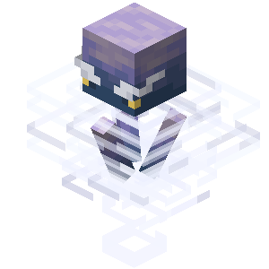

Una cámara de desafío (Trial Chamber en inglés) es una estructura que se genera bajo tierra. Fueron añadidas como parte de la actualización Tricky Trials.
Una arca ominosa es una variante del arca que se encuentra en las cámaras de desafío. Ofrece un valioso botín cuando se abre con una llave de desafío ominosa.
Una arca es un bloque encontrado en las cámaras de desafío. Dispensa botín desbloqueándola con una llave de desafío. Cada arca puede ser desbloqueada una vez por jugador.
El breeze o brisa es una criatura hostil que aparece en las cámaras de desafío (trial chambers) cuando hay ciertos generadores de desafío. Se mueve saltando grandes distancias y ataca disparando cargas de viento, que infligen un gran retroceso e interactúan con botones, palancas, puertas que no sean de hierro y bloques similares en un radio cercano. Además, los breezes repelen las flechas y los tridentes lanzados, por lo que no reciben daño de ellos.
Me parece que es un gran añadido a Minecraft luego de las últimas versiones que fueron algo pobres. Le da bastante juego con los nuevos fabricadores y sobre todo esta nueva mazmorra.